# A tibble: 1,417 × 28
version version_season season full_name castaway_id castaway age city
<fct> <chr> <dbl> <chr> <chr> <chr> <dbl> <chr>
1 US US50 50 Angelina Keel… US0554 Angelina NA <NA>
2 US US50 50 Aubry Bracco US0477 Aubry NA <NA>
3 US US50 50 Charlie Davis US0682 Charlie NA <NA>
4 US US50 50 Chrissy Hofbe… US0515 Chrissy NA <NA>
5 US US50 50 Christian Hub… US0550 Christi… NA <NA>
6 US US50 50 Cirie Fields US0179 Cirie NA <NA>
7 US US50 50 Benjamin Wade US0277 Coach NA <NA>
8 US US50 50 Colby Donalds… US0031 Colby NA <NA>
9 US US50 50 Dee Valladares US0666 Dee NA <NA>
10 US US50 50 Emily Flippen US0668 Emily NA <NA>
# ℹ 1,407 more rows
# ℹ 20 more variables: state <chr>, episode <dbl>, day <dbl>, order <dbl>,
# result <chr>, jury_status <chr>, place <int>, original_tribe <chr>,
# jury <lgl>, finalist <lgl>, winner <lgl>, acknowledge <lgl>,
# ack_look <lgl>, ack_speak <lgl>, ack_gesture <lgl>, ack_smile <lgl>,
# ack_quote <chr>, ack_score <int>, jury1 <dbl>, jury2 <fct>Working with
Factors
Day 12
Prof Emily Kurtz
Carleton College
Stat 220 - Spring 2026
Survivor castaways data
Both of these are categorical variables
[1] "Angelina Keeley" "Aubry Bracco" "Charlie Davis"
[4] "Chrissy Hofbeck" "Christian Hubicki" "Cirie Fields" Same graph, colored by the same categorical variable
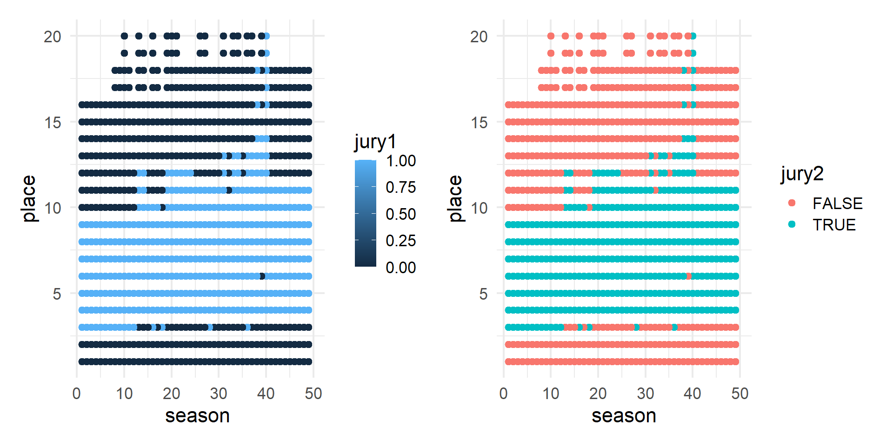
Factors
R’s representation of categorical data. Consists of:
A set of values
An ordered set of valid levels
Factors
Stored as an integer vector with a levels attribute
gss_cat
A sample of data from the General Social Survey, a long-running US survey conducted by NORC at the University of Chicago.
# A tibble: 21,483 × 9
year marital age race rincome partyid relig denom tvhours
<int> <fct> <int> <fct> <fct> <fct> <fct> <fct> <int>
1 2000 Never married 26 White $8000 to 9999 Ind,near … Prot… Sout… 12
2 2000 Divorced 48 White $8000 to 9999 Not str r… Prot… Bapt… NA
3 2000 Widowed 67 White Not applicable Independe… Prot… No d… 2
4 2000 Never married 39 White Not applicable Ind,near … Orth… Not … 4
5 2000 Divorced 25 White Not applicable Not str d… None Not … 1
6 2000 Married 25 White $20000 - 24999 Strong de… Prot… Sout… NA
7 2000 Never married 36 White $25000 or more Not str r… Chri… Not … 3
8 2000 Divorced 44 White $7000 to 7999 Ind,near … Prot… Luth… NA
9 2000 Married 44 White $25000 or more Not str d… Prot… Other 0
10 2000 Married 47 White $25000 or more Strong re… Prot… Sout… 3
# ℹ 21,473 more rowsWarm up
Use gss_cat to answer the following questions.
Which religions watch the least TV?
Do married people watch more or less TV than single people?
Which do you prefer?
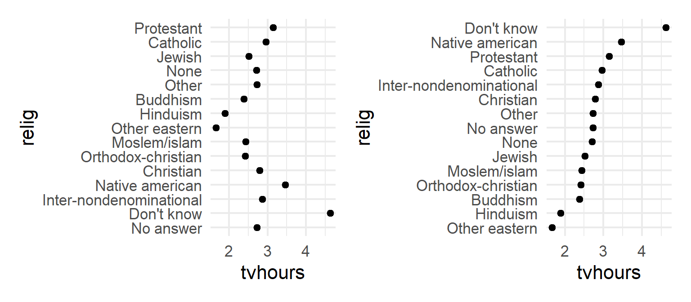
Why is the y-axis in this order?
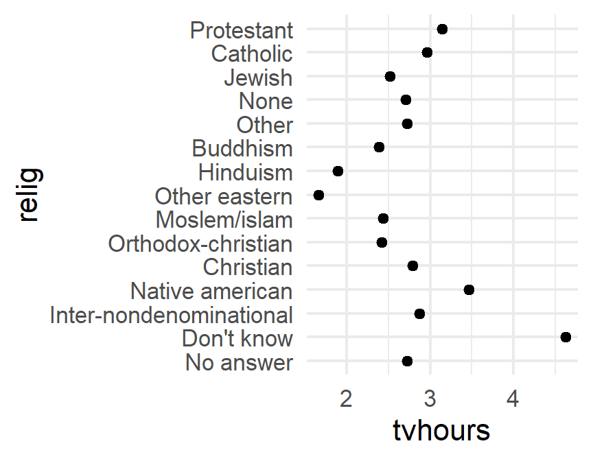
levels()
Use levels() to access a factor’s levels
Most useful factor skills:
1. Reorder the levels
2. Recode the levels
3. Collapse levels
fct_reorder
.ffactor vector.xvariable to reorder by (in conjunction with.fun).funfunction to reorder by.descput levels in descending order?
Try it
Use rincome_summary to construct a dotplot of rincome against age.
Reorder rincome by age
Which do you prefer?
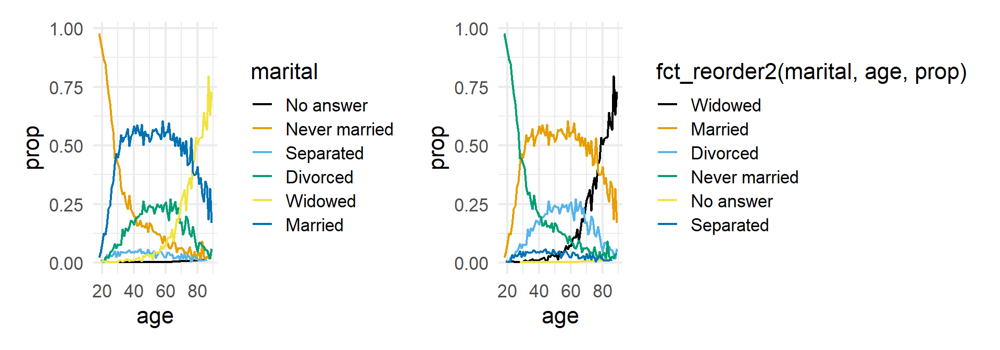
fct_reorder2
Reorders the levels of a factor by the Y values associated with the largest X values.
.ffactor vector.xX variable.yY variable.funfunction to reorder by.descput levels in descending order?
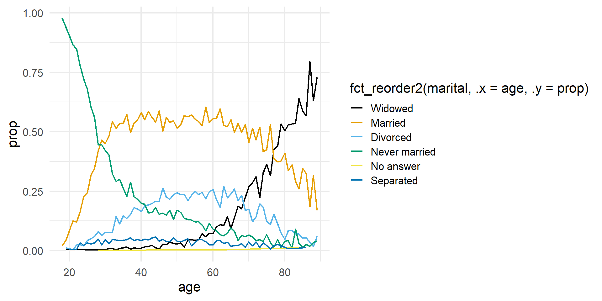
Which political leaning watches more TV?
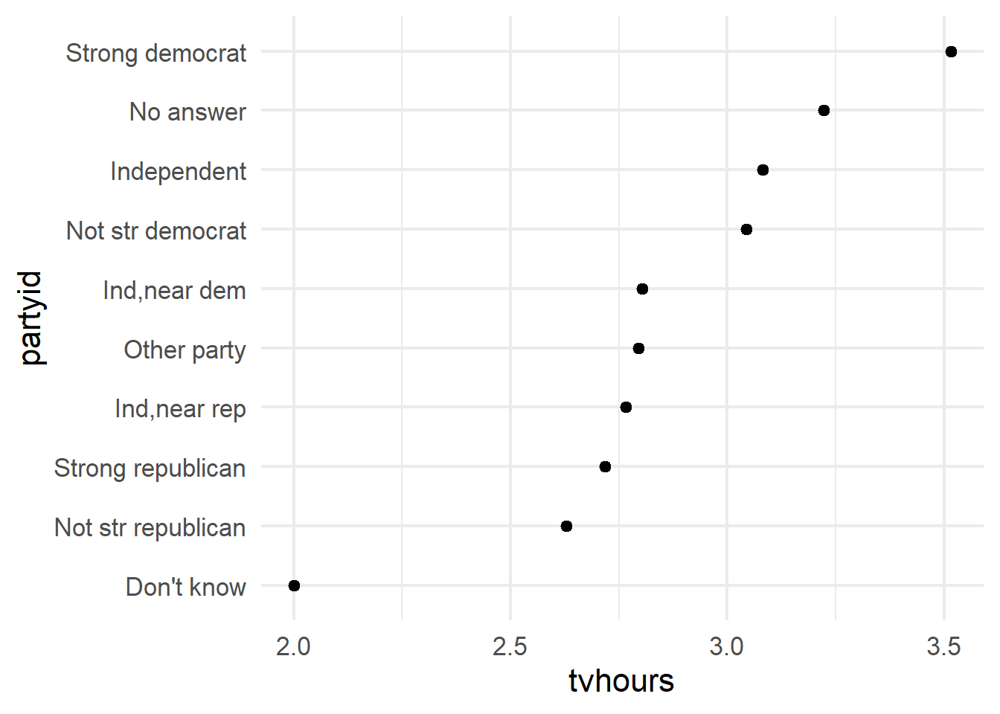
How could we improve the partyid labels?
fct_recode
Changes values of levels
gss_cat %>%
drop_na(tvhours) %>%
select(partyid, tvhours) %>%
mutate(partyid = fct_recode(partyid,
"Republican, strong" = "Strong republican",
"Republican, weak" = "Not str republican",
"Independent, near rep" = "Ind,near rep",
"Independent, near dem" = "Ind,near dem",
"Democrat, weak" = "Not str democrat",
"Democrat, strong" = "Strong democrat")) %>%
group_by(partyid) %>%
summarize(tvhours = mean(tvhours)) %>%
ggplot(aes(tvhours, fct_reorder(partyid, tvhours))) +
geom_point() +
labs(y = "partyid")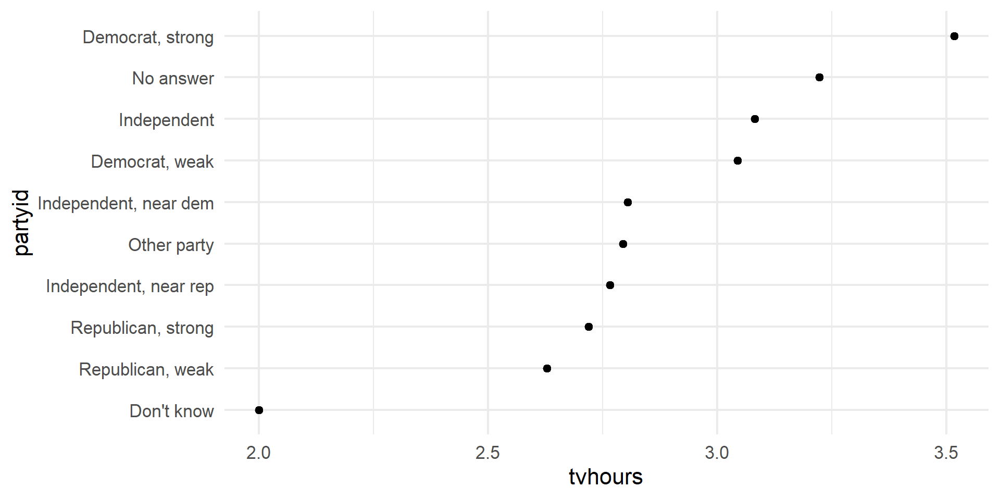
How can we combine these factor levels?
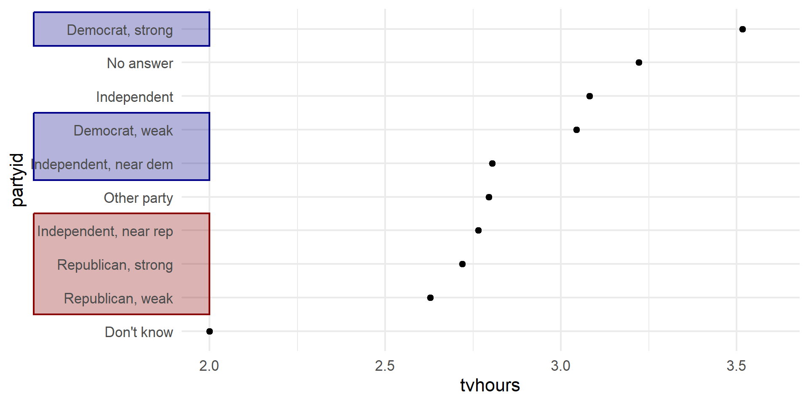
fct_collapse()
Changes multiple levels into single levels
.ffactor vector...named arguments set to a character vector (levels in the vector will be collapsed to the name of the argument)
gss_cat %>%
drop_na(tvhours) %>%
select(partyid, tvhours) %>%
mutate(
partyid =
fct_collapse(
partyid,
conservative = c("Strong republican",
"Not str republican",
"Ind,near rep"),
liberal = c("Strong democrat",
"Not str democrat",
"Ind,near dem"))
) %>%
group_by(partyid) %>%
summarize(tvhours = mean(tvhours)) %>%
ggplot(aes(tvhours, fct_reorder(partyid, tvhours))) +
geom_point() +
labs(y = "partyid")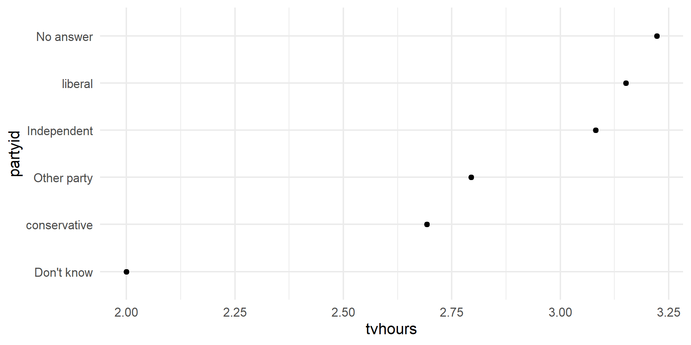
Your turn
Collapse the marital variable to have levels Married, Not married, and No answer
Include "Never married", "Divorced", and “Widowed" in Not married
There are relatively few points in each of these groups
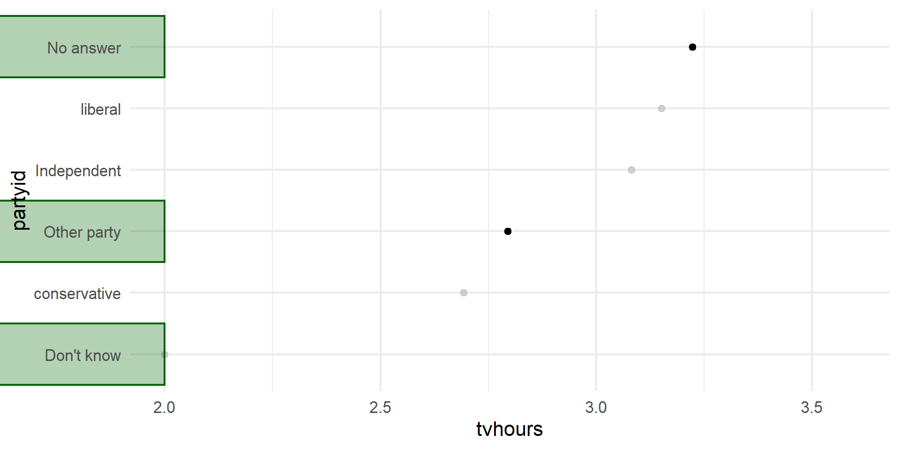
There are relatively few points in each of these groups
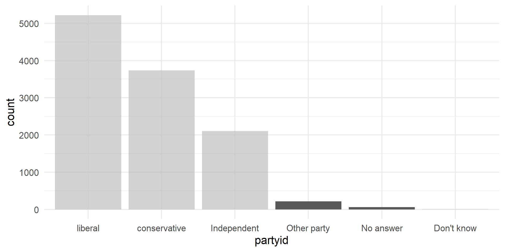
fct_lump()
Collapses levels with fewest values into a single level.
By default collapses as many levels as possible such that the new level is still the smallest.
ffactor vectornpreserve the most common n levelsother_level = "Other"
Your turn: hotel bookings
The remainder of the activity file has you fixing up some plots using hotel bookings data from Tidy Tuesday
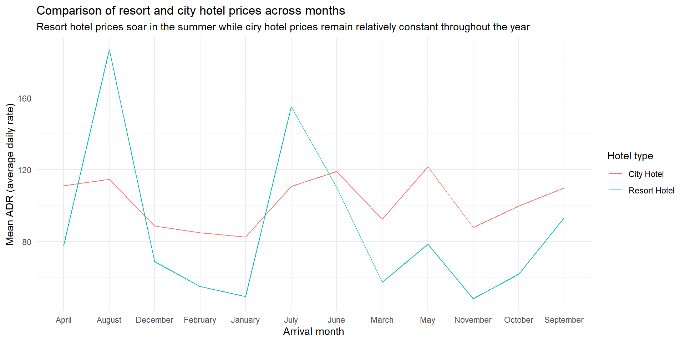